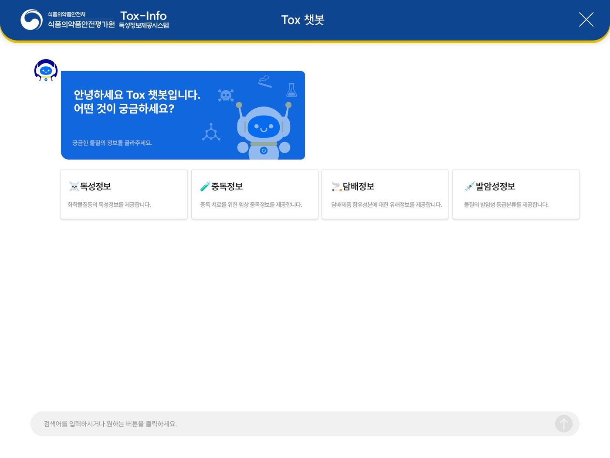
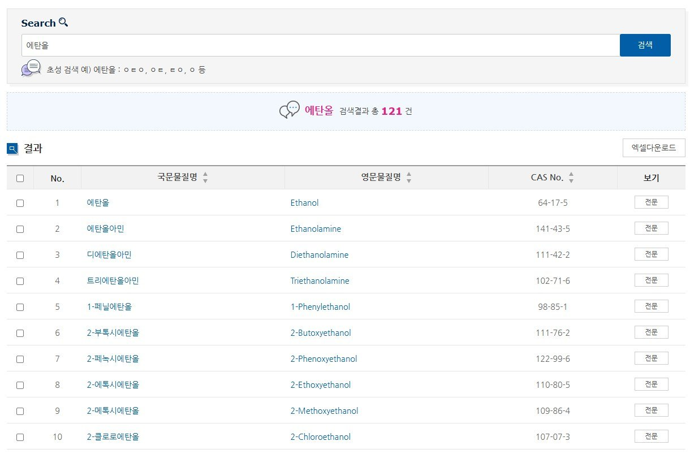
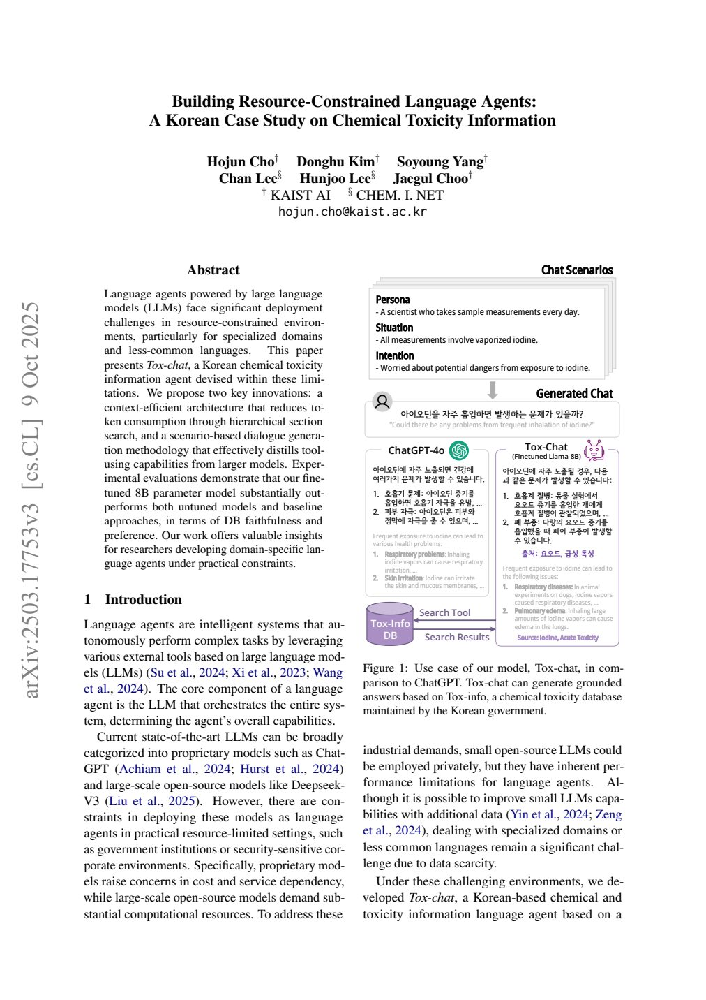

Project 04 / 11 · Operations · Public system · 2024 to 2026
Toxinfo: running a public toxicity information system
A three-year operations contract (2024 to 2026) for the Ministry of Food and Drug Safety’s toxicity information system: releases, screens, security checks, reports, and a chatbot pilot with KAIST that became an EMNLP 2025 paper.
- Client
- Ministry of Food and Drug Safety
- Period
- January 2024 to December 2026, three-year maintenance contract. Tox chatbot pilot July to November 2024
- Role
- Operations: release schedule; screen design and UI improvements; monthly security checks; monthly, progress and final reports; client contact
- Deliverables
- Releases, screen designs, security check reports, monthly, progress and final reports and decks; part of the 130 chatbot scenarios and their tests; an EMNLP 2025 paper with KAIST AI
Operations
Toxinfo is the public toxicity information system of the Ministry of Food and Drug Safety. Each month I schedule and apply the regular release of fixes and improvements, run the security check and report its results, and write the monthly report; I also write the progress and final reports, prepare the kickoff, progress and final presentations, and am the day-to-day contact for the client.
Screens and data
I designed user and administrator screens and UI improvements, wrote requirement definitions in the client’s format, proposed new functions such as a carcinogenicity search, updated the manuals, and mapped and structured the toxicity data.
Tox chatbot pilot
A pilot that put a chatbot on top of the toxicity database, with KAIST building the AI model. I coordinated with KAIST, wrote the requirement definitions and reviewed the design mockups, took part in writing and testing the 130 usage scenarios for general and expert users, and reviewed and corrected the chatbot’s responses.


Paper
The pilot became a paper with KAIST AI, published in the EMNLP 2025 Industry Track (Suzhou, November 2025): Building Resource-Constrained Language Agents: A Korean Case Study on Chemical Toxicity Information. Tox-chat answers Korean questions about chemical exposure and safety from the Tox-Info database, searching it section by section to keep the context short, and its 8B model was fine-tuned on dialogues generated from usage scenarios. In the paper’s evaluation the fine-tuned model answered consistently with the database in 68 percent of cases, against 6 percent for the untuned model and 58 percent for GPT-4o.

Documents and screens
Toxinfo 2024 maintenance proposal, my chapters


Toxinfo 2024 progress report


Toxinfo 2024 final presentation


Toxinfo screen designs: search-result download, initial-consonant search, source database, toxicity table


Tox chatbot screen design


Tox chatbot technical description


Tox chatbot pilot, final report


EMNLP 2025 Industry Track paper with KAIST AI: Tox-chat, a Korean toxicity-information language agent